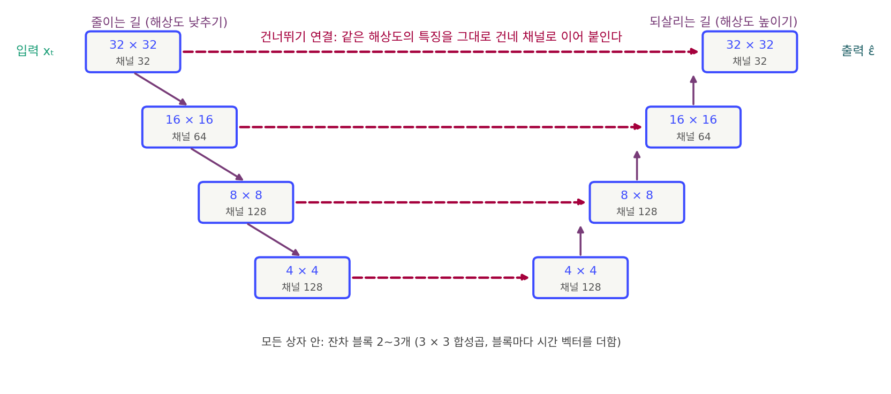
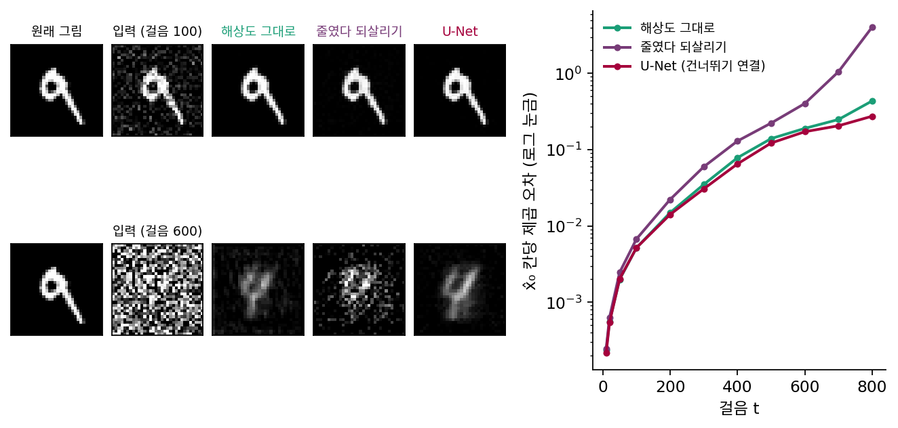

U-Net: 줄인 길과 되살리는 길을 건너뛰기 연결로 잇는다
해상도를 낮추면 멀리 본다. 그런데 잡음 예측 신경망은 입력과 같은 크기의 출력, 칸마다 섞인 잡음의 어림을 내놓아야 한다. 맨 아래 8 × 8칸에서 다시 64 × 64칸으로 올라와야 한다. 지도 앱에서 축척을 여섯 번 줄인 화면을 그대로 확대하면 사라졌던 공원이 돌아올까? 돌아오지 않는다. 확대한 화면에는 흐릿한 얼룩만 있다. 줄이는 동안 지운 것을 올라가는 길이 무엇으로 되살릴까?
역사: 픽셀마다 답하는 신경망
2015년 독일 프라이부르크 대학의 론네베르거(Olaf Ronneberger), 피셔(Philipp Fischer), 브록스(Thomas Brox)가 붙든 문제는 생물 의학 사진의 분할이었다. 전자현미경으로 찍은 신경 조직 사진에서 픽셀마다 세포막인지 아닌지를 가려야 했다. 그림 전체에 라벨 하나를 붙이는 분류와 달리, 픽셀마다 답이 하나씩 있어야 한다.
앞선 방법(치레산과 동료들, 2012)은 픽셀 하나마다 그 둘레 조각을 잘라 분류 신경망에 넣어 2012년 같은 대회에서 우승했다. 론네베르거와 동료들은 두 흠을 짚었다. 이웃 픽셀의 조각이 거의 겹쳐 같은 계산을 되풀이하니 느리다. 그리고 조각을 크게 자르면 맥락은 많이 보지만 해상도를 줄이는 층이 늘어 위치가 부정확해지고, 작게 자르면 위치는 정확하지만 맥락이 모자란다.
그들은 롱(Jonathan Long), 셸해머(Evan Shelhamer), 대럴(Trevor Darrell)이 같은 시기에 내놓은 완전 합성곱 신경망에서 출발했다. 해상도를 줄이는 신경망 뒤에 해상도를 다시 높이는 층들을 붙이고, 높은 해상도의 특징을 줄이는 쪽에서 가져와 합치는 구조다. 론네베르거와 동료들은 올라가는 쪽에도 채널을 넉넉히 두었고, 그러자 올라가는 길이 내려가는 길과 거의 대칭이 되어 U자 모양이 되었다. 논문 요약은 이 구조를 「맥락을 잡는 줄이는 길과, 정확한 위치를 가능하게 하는 대칭인 늘리는 길」로 설명했다. 이름이 U-Net 이다.
학습 사진은 512 × 512 픽셀 30장뿐이었다. 그들은 사진을 고무판처럼 늘이고 비트는 변형으로 학습 자료를 불렸다. 같은 신경망으로 2015년 ISBI 세포 추적 대회의 광학 현미경 부문 두 개에 나가, 겹친 넓이의 비율(IOU)로 92%와 77.5%를 얻어 2위의 83%와 46%를 크게 앞섰다. 512 × 512 그림 한 장을 나누는 데 GPU에서 1초가 안 걸렸다.
원래 U-Net 은 합성곱에 패딩을 쓰지 않았다. 그림 바깥을 지어내 채우지 않고, 이웃이 다 있는 칸에만 답을 낸다. 그래서 572 × 572 입력에서 388 × 388 출력이 나온다. 큰 그림은 조각으로 나눠 처리하되, 답을 내는 가운데 부분끼리 빈틈없이 맞닿도록 입력 조각을 겹쳐 놓았다. 그림 가장자리 바깥은 그림을 거울처럼 뒤집어 채웠다. 논문은 이것을 겹치는 타일 전략(overlap-tile strategy)이라 불렀다.
줄였다 되살리기만으로는 결이 돌아오지 않는다
잡음 걷기에서 확인하자. MNIST 손글씨 숫자(가로세로 28칸, 학습 6만 장)를 32 × 32칸으로 맞추고, DDPM 일정(1000걸음)으로 잡음을 섞어 잡음 예측을 학습하는 신경망 세 개를 견준다. 모두 3 × 3 합성곱 두 층짜리 블록으로 짓고 같은 횟수만큼 학습했다.
- 해상도 그대로: 32 × 32칸에서 채널 192개로 블록 8개(합성곱 18층, 이론상 닿는 폭 37칸). 매개변수 5,540,545개.
- 줄였다 되살리기: 32 → 16 → 8 → 4칸으로 내려갔다가 4 → 8 → 16 → 32칸으로 올라온다. 매개변수 4,793,857개.
- 줄였다 되살리되, 내려가는 길의 단계마다 특징을 올라오는 길의 같은 해상도 단계에 그대로 건네 이어 붙인다. 매개변수 5,939,521개.

시험 그림 2,000장에 잡음을 섞어, 신경망이 맞힌 잡음으로 되돌린 원래 그림의 어림 x̂₀와 실제 그림의 칸당 제곱 오차를 쟀다. 픽셀 값은 −1에서 1 사이다.
| 걸음 t (원래 그림이 남는 비율, 잡음 크기) | 해상도 그대로 | 줄였다 되살리기 | U-Net 꼴(건너뛰기 연결) |
|---|---|---|---|
| 100 (0.95, 0.32) | 0.0052 | 0.0067 | 0.0052 |
| 300 (0.63, 0.78) | 0.0351 | 0.0597 | 0.0307 |
| 600 (0.16, 0.99) | 0.190 | 0.403 | 0.172 |
| 800 (0.03, 1.00) | 0.436 | 4.05 | 0.275 |
잡음이 옅은 걸음 100에서는 해상도 그대로인 신경망과 셋째 신경망이 0.0052로 같고, 줄였다 되살리기만 하는 신경망은 0.0067로 30% 가까이 나쁘다. 가는 결을 다듬는 일에 넓은 시야는 필요 없고, 4 × 4칸까지 줄였다 키운 길은 결을 잃는다. 잡음이 짙어지면 순서가 바뀐다. 걸음 800에서 해상도 그대로인 신경망은 0.436으로, 셋째 신경망 0.275보다 크게 나쁘다. 시험 그림 모두를 평균 그림 하나로 어림해도 오차가 0.197이니, 짙은 잡음에서 해상도 그대로인 신경망은 그림 전체의 모양을 거의 읽지 못한 셈이다.
뜻밖인 것은 줄였다 되살리기만 하는 신경망이 짙은 잡음에서 가장 크게 무너진다는 점이다(걸음 800에서 4.05). 이 신경망은 섞인 잡음을 맞힌다는 것을 떠올리자. 걸음 800의 입력은 거의 잡음 그 자체라서, 맞혀야 할 답은 입력의 칸 하나하나와 거의 같은 무늬다. 4 × 4칸 64개 특징으로는 32 × 32칸 잡음 무늬를 옮겨 낼 수 없다. 남은 오차는 원래 그림으로 되돌릴 때 남는 비율(0.03)로 나뉘어 크게 부푼다. 가는 결은 옅은 잡음에서는 그림 쪽에, 짙은 잡음에서는 맞혀야 할 잡음 쪽에 있다. 어느 쪽이든 칸 하나하나를 그대로 옮기는 길이 있어야 한다.

줄였다 되살리기만 하는 신경망의 출력은 맨 아래 4 × 4칸에서 다시 키운 것이다. 그 16칸에 담기지 못한 결은, 올라오는 길이 아무리 똑똑해도 지어낼 수밖에 없다. 내려가는 길의 각 단계는 그 해상도의 결을 아직 가지고 있다. 그것을 올라오는 길의 같은 해상도 자리에 그대로 건네면, 올라오는 길은 아래에서 올라온 굵은 판단과 옆에서 건너온 가는 결을 함께 읽는다.
내려가는 길의 특징을 중간 단계들을 건너뛰어 올라오는 길의 같은 해상도 자리로 그대로 건네는 길을 건너뛰기 연결 (줄이기 전의 특징을 되살리는 쪽에 그대로 건네기 / skip connection)이라 한다. 줄이는 길, 되살리는 길, 그리고 단계마다의 건너뛰기 연결을 갖춘 신경망이 U-Net 이다. 낮은 해상도 단계는 짙은 잡음 속의 굵은 모양을 맡고, 건너뛰기 연결은 칸 하나하나의 결을 맡는다. 옅은 잡음에서는 그림의 결을, 짙은 잡음에서는 맞혀야 할 잡음의 결을 옮긴다. 장난감 실험에서 셋째 신경망이 모든 걸음에서 가장 좋거나 같았던 까닭이다.
ML에서: 분할 신경망이 잡음 예측 신경망이 되기까지
호, 자인, 아빌은 2020년 DDPM 논문에서 잡음 예측 신경망으로 U-Net 을 썼다. 정확히는 그림 생성 모델 PixelCNN++ 의 U-Net 꼴 뼈대를 가져왔다. 32 × 32 그림에서는 해상도 단계 넷(32 × 32에서 4 × 4까지), 단계마다 잔차 블록 둘을 두고 16 × 16 단계에 어텐션 블록을 끼웠다. CIFAR-10 모델의 매개변수는 3,570만 개였다. 픽셀마다 「세포막인가」를 답하던 신경망이, 픽셀마다 「섞인 잡음이 얼마인가」를 답하게 된 것이다. 출력이 입력과 같은 크기이고 멀리 보는 일과 가는 결을 다듬는 일이 함께 필요하다는 점에서, 두 일은 같은 모양이다.
문제 4. 줄여서 보낸 사진
친구에게 사진을 가로세로 4분의 1로 줄여 보냈고, 친구는 그것을 원래 크기로 키워 본다. 줄일 때는 네 칸씩 평균을 내고, 키울 때는 한 칸을 네 칸으로 복사한다. 한 줄만 보면 원래 밝기가 0, 0, 0, 0, 0, 1, 0, 0이었다(6번째 칸에 가는 선). (가) 친구가 보는 줄은? (나) 선이 5번째나 8번째 칸에 있었다면 친구가 보는 줄은 달라지는가? (다) 무엇을 함께 보내면 친구가 원래 줄을 되살릴 수 있는가?

줄이면 앞 네 칸 평균 0, 뒤 네 칸 평균 0.25. 키우면 0, 0, 0, 0, 0.25, 0.25, 0.25, 0.25예요. 선이 네 칸 너비로 흐려졌네요.

(나)는요?

5번째든 8번째든 뒤 네 칸 평균은 똑같이 0.25예요. 결과가 같아요. 친구는 선이 뒤 네 칸 어디에 있었는지 알 길이 없네요.

줄인 사진에서 사라진 정보는 키우는 방법을 아무리 잘 골라도 못 돌아와. 서로 다른 원래 줄 넷이 같은 결과가 됐으니까.

그럼 (다)는 무엇을 더 보내야 할까요? 다 보내면 줄인 의미가 없으니, 최소한으로요.

원래 줄에서 키운 줄을 뺀 차이요. 0, 0, 0, 0, −0.25, 0.75, −0.25, −0.25예요. 키운 줄에 이걸 더하면 원래 줄이 돼요. 그리고 차이는 대부분 0이라 적기 쉬워요.

그래요. 줄인 쪽은 굵은 틀을, 옆으로 건넨 쪽은 그 해상도에서만 보이던 결을 맡아요.
회의록 요약본만 받으면 누가 무슨 숫자를 말했는지 모르니까, 요약본이랑 그 회의 녹취를 같이 받는 거랑 같네요.
문제 5. 큰 이미지를 타일로 나눠 분할하기
원래 U-Net 은 572 × 572 픽셀 타일을 입력으로 받아 가운데 388 × 388 픽셀에 대해서만 답을 낸다. 가장자리 쪽 픽셀은 둘레의 이웃 픽셀을 다 보지 못해 답을 내지 않는다. 가로 1,500 픽셀인 이미지를 가로 방향으로 빈틈없이 처리한다고 하자. (1) 타일은 최소 몇 장인가? (2) 이웃한 두 타일의 입력은 몇 픽셀 겹치는가? (3) 맨 왼쪽 타일의 입력은 이미지 왼쪽 끝 밖으로 몇 픽셀 나가는가?
1,500 ÷ 572 = 2.6이니까 3장이요.
답을 내는 건 가운데 388픽셀뿐이라며. 572로 나누면 타일 사이사이 가장자리 몫은 아무도 답을 안 내.

아, 쓸 수 있는 부분이 아니라 통째 너비로 나눴네요. 388로 나누면 1,500 ÷ 388 = 3.87, 네 장이요. 세 장이면 1,164픽셀까지밖에 못 가요.
(2)는요? 답을 내는 가운데 부분끼리 맞닿게 놓으면 입력은 얼마나 겹칠까요?
가운데 부분이 388픽셀씩 옮겨 가니까, 572픽셀짜리 입력끼리는 572 − 388 = 184픽셀 겹쳐요. 한 타일의 오른쪽 가장자리 92픽셀이 다음 타일의 가운데 부분에 포개지는 거고요.
그럼 (3), 맨 왼쪽 타일은요?
가운데 부분이 이미지 왼쪽 끝에서 시작하려면 입력은 92픽셀 더 왼쪽에서 시작해야 해요. 거긴 이미지 밖이라 픽셀이 없는데요?
논문은 그 자리를 이미지를 가장자리에서 거울처럼 뒤집어 비춘 픽셀로 채웠어요. 그리고 이 방법을 겹치는 타일 전략(overlap-tile strategy)이라 불렀죠. 가장자리는 믿지 않고, 모든 픽셀이 어느 한 타일의 가운데에 들어가도록 겹쳐 놓는다는 생각이에요.

그런데 잡음 예측 신경망은 패딩으로 입력과 출력 크기를 같게 맞추잖아요. 그러면 가장자리 걱정은 없어지나요?

크기는 같아져도 가장자리 칸은 여전히 지어낸 바깥을 보고 답해요. 큰 그림을 조각으로 나눠 잡음을 걷는 도구들이 조각을 겹쳐 놓고 겹친 곳을 섞는 까닭이 그거예요.
복사기로 긴 문서를 나눠 복사하면 가장자리가 잘려 나오니까, 다음 쪽을 조금씩 겹쳐 놓고 복사하는 거랑 같네요.
문제 6. 이어 붙이기와 더하기
Stable Diffusion 1.x 의 올라오는 길 첫 블록은 8 × 8칸에서, 아래에서 올라온 특징(채널 1280)과 건너온 특징(채널 1280)을 받아 채널 1280을 내놓는 잔차 블록이다. 이 블록은 두 특징을 채널 방향으로 이어 붙여 채널 2560으로 읽는다. 블록 안의 첫 3 × 3 합성곱만 보자. (가) 이어 붙인 채널 2560을 받아 1280을 내는 3 × 3 합성곱의 매개변수(편향 포함)는? (나) 두 특징을 더해 채널 1280으로 받는다면? (다) 더하기 대신 이어 붙이기를 고르면 무엇을 얻는가?
(가)는 3 × 3 × 2560 × 1280 + 1280 = 29,492,480개요. (나)는 3 × 3 × 1280 × 1280 + 1280 = 14,746,880개. 절반이네요. 더하면 싸고 결과도 비슷하지 않을까요? 어차피 합성곱이 둘을 섞잖아요.
이어 붙인 채널 2560에 곱하는 가중치를 앞 절반과 뒤 절반으로 나눠 적어 봐요. 그 합성곱은 무엇을 계산하죠?
W1·(아래에서 온 것) + W2·(건너온 것)이에요. 더하기는 그 가운데 W1 = W2인 경우뿐이고요. 그러니까 이어 붙이기는 두 특징에 서로 다른 가중치를 줄 수 있어요.

그럼 더하기는 「굵은 판단」과 「가는 결」을 같은 채널 자리에서 같은 무게로 섞어 버리는 거네요. 건너온 결이 3번 채널에 있었는데 아래에서 온 판단도 3번 채널에 있으면 둘이 한 수로 뭉쳐요.
그래요. 이어 붙이기는 매개변수를 더 쓰는 대신, 두 출처를 따로 읽을지 섞어 읽을지를 학습에 맡겨요. 롱과 동료들의 완전 합성곱 신경망은 두 길의 점수를 더했고, U-Net 은 이어 붙였어요.
선형대수에서 [A B]로 이어 붙인 행렬에 벡터 두 개를 쌓아 곱하는 것과, 두 벡터를 먼저 더해 A 하나에 곱하는 것의 차이네요. 뒤의 것은 앞의 것에서 A = B로 묶은 특수한 경우고요.